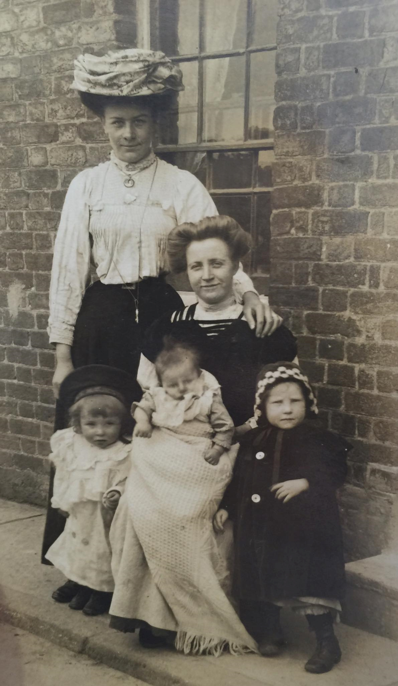
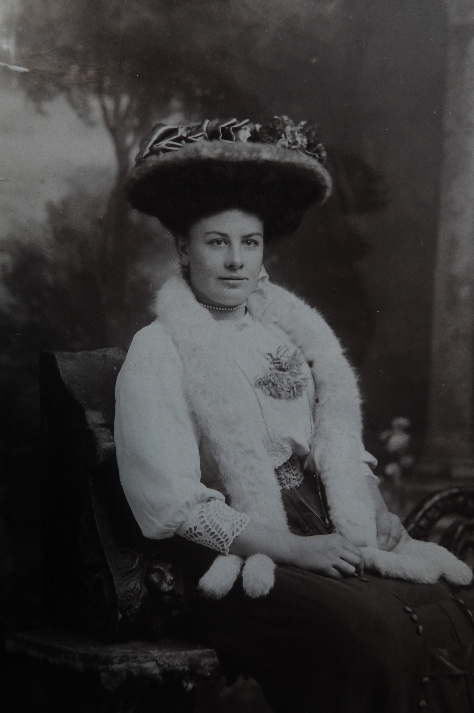
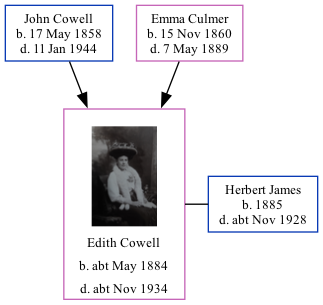

Edith Eliza James (née Cowell) cMay 1884 - c1934
[ Home ] | [ Calendar ] | [ Surnames Index ] | [ Family History ]A servant domestic daily and home duties and the child of John Cowell (a farm waggoner) and Emma CulmerEdith Cowell, the great-aunt of Nigel Horne, was born in Upstreet, Kent, England c. May 18841,2,3,4,5 and baptized in Chislet, Kent, England on May 4, 1884. She married Herbert James (a general laborer) in Thanet, Kent, England around Nov 19117.
Throughout her life, Edith lived in several places: at her birthplace on Apr 5, 18918; at 13 Ashburnham Road, St Lawrence in Thanet on Apr 2, 19119; at Highfield Road, Bognor, Westhampnett, Sussex, England in 19213; and at Hatford Villa, Highfield Road, Bognor, West Sussex, England on Jun 19, 19213.
She died c. Nov 1934 in East Preston, West, Sussex6.
Parents
- John was born on May 17, 1858
- Emma was born on Nov 15, 1860
Citations
- 1891 England Census Online publication - Provo, UT, USA: The Generations Network, Inc., 2005.Original data - Census Returns of England and Wales, 1891. Kew, Surrey, England: The National Archives of the UK (TNA): Public Record Office (PRO), 1891. Data imaged from The National
- 1911 England Census Online publication - Provo, UT, USA: Ancestry.com Operations, Inc., 2011.Original data - Census Returns of England and Wales, 1911. Kew, Surrey, England: The National Archives of the UK (TNA), 1911. Data imaged from the National Archives, London, England.
- 1921 Census Of England & Wales - Findmypast (was age 37 and the wife of the head of the household)
- England & Wales births 1837-2006 - Findmypast
- England & Wales, FreeBMD Birth Index, 1837-1915 Online publication - Provo, UT, USA: The Generations Network, Inc., 2006.Original data - General Register Office. England and Wales Civil Registration Indexes. London, England: General Register Office. © Crown copyright. Published by permission of the Cont
- England & Wales deaths 1837-2007 - Findmypast
- England & Wales, FreeBMD Marriage Index: 1837-1915 Online publication - Provo, UT, USA: The Generations Network, Inc., 2006.Original data - General Register Office. England and Wales Civil Registration Indexes. London, England: General Register Office. © Crown copyright. Published by permission of the Cont
- 1891 England, Wales & Scotland Census - Findmypast (was age 7 and the daughter of the head of the household)
- 1911 Census for England & Wales - Findmypast (was age 27 and the sister of the head of the household)
Media
Emily Lawrence and Edith Cowell

Edith Eliza Cowell

1911 England, Wales & Scotland Census Transcription - GBC-1911-RG14-04528-0357-1
England & Wales births 1837-2006 - BMD/B/1884/2/AZ/000130/292
England Births & Baptisms 1538-1975 - R_884111779
England, Births & Baptisms 1538-1975 Transcription - R_884919342
England, Births & Baptisms 1538-1975 Transcription - R_938102327
Canterbury Baptisms Transcription - GBPRS-CANT-B-96111805
1891 England, Wales & Scotland Census Transcription - GBC-1891-0005761367
England & Wales marriages 1837-2008 - BMD/M/1911/4/AZ/000217/132
1911 England, Wales & Scotland Census Transcription - GBC-1911-RG14-04528-0357-6
1921 Census Of England & Wales - GBC/1921/RG15/05102/0415/02
England & Wales Deaths 1837-2007 - BMD/D/1934/4/AZ/000476/079
Family Tree
Generated by ged2site. Last updated on Nov 13, 2024